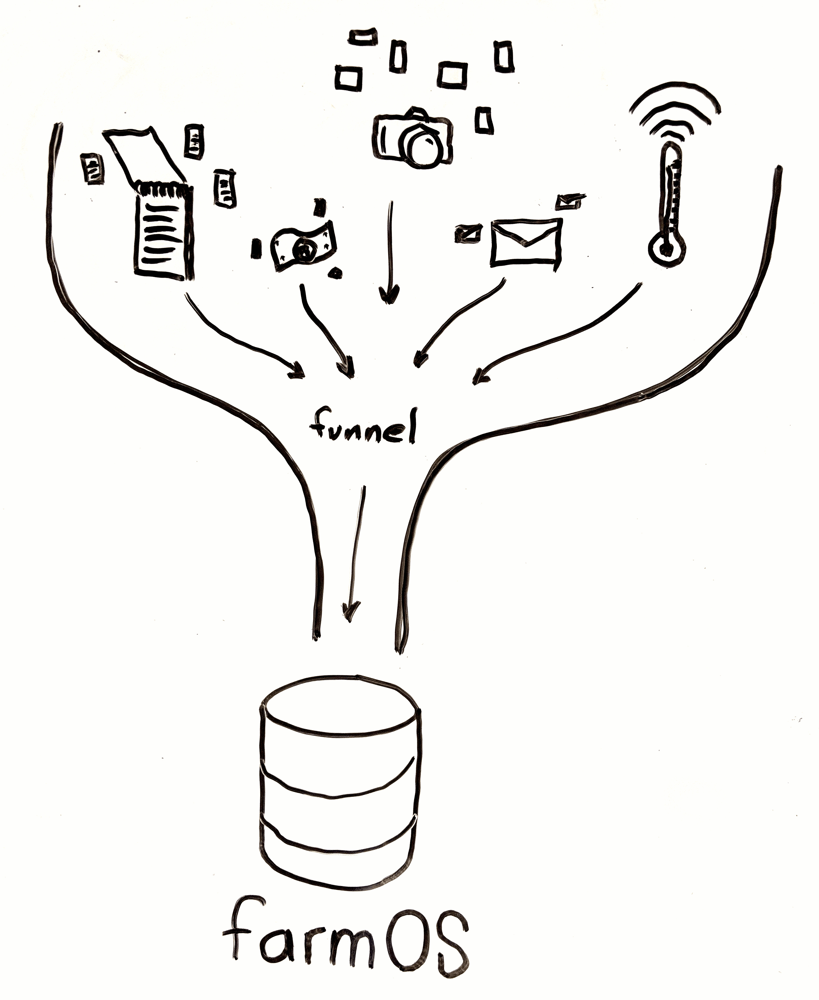
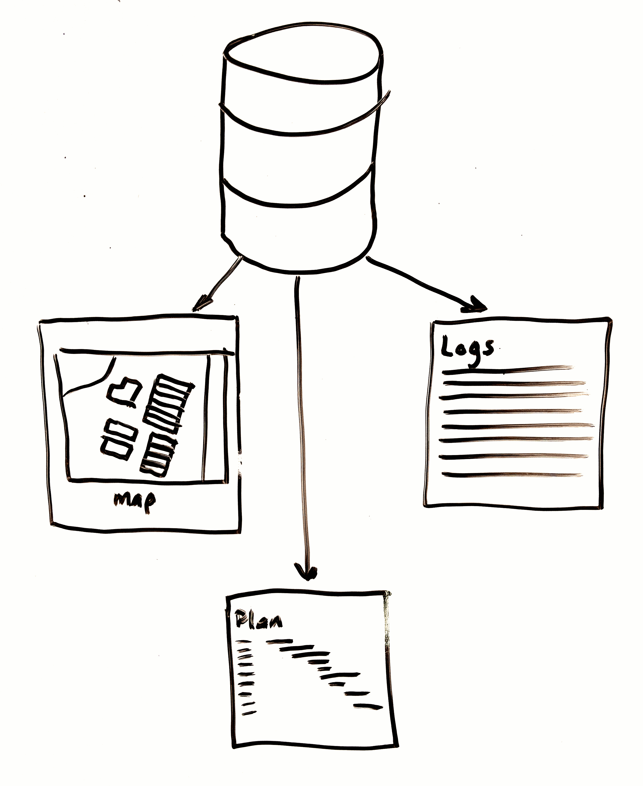

Produce Safety Record Keeping,
Organic Certification & More
2020 PASA Conference
Presented by
- Michael Stenta, farmOS / Farmier
Soil Health Benchmark Study
Support for this session is provided by a USDA NRCS Conservation Innovation grant.
Free farmOS hosting available for PASA members.
https://pasafarming.org/soil-institute/farm-based-research/farmOS
farmOS hosting, development, support
Audience
- Producers who need to keep records for Organic Cert., FSMA, GAP, etc.
- Service providers/consultants/inspectors who help producers keep records.
farmOS can not:
- Tell you what records you are required to keep.
farmOS can:
- Give you a place to organize those records.
- Provide access to your certifier(s) over the internet.
- Manage other records in the same place.
- Record requirements vary.
- Talk to your certifier.
- Trainings/workshops by PASA, Extensions, etc.
Workshops at PASA
- Food Safety Grower Training - 2/5 @ 9am
- Clinic: How to Become Certified Organic - 2/6 @ 3:30pm
- Clinic: What Do I Really Need to Know About Food Safety? - 2/7 @ 8:30am
- Clinic: Succeeding with Certified Organic, Years Two to Five - 2/7 @ 3:30pm
- How to Write Good Standard Operating Procedures for Food Safety Plans - 2/8 @ 10:30am
Sometimes you will never know the value of a moment until it becomes a memory.
-Dr. Seuss
farmOS is a web-based application for farm management, planning, and record keeping.
Big Picture Goals

Collect anything
- Activities and observations
- Inputs and harvests
- Maps and location
- Weather/sensor data
- Any scale

Find and manage records
- Search records by type
- Link records together
- Categorize and flag
- Filter and sort
- Export

From anywhere
- Desktop
- Laptop
- Tablet
- Phone
You own the data
- Private by default
- Fine-grained permissions
- Options for sharings
Global community
- Free and open source / anyone can contribute!
- Multilingual support, metric/imperial units
- Platform for farmers, researchers, and service providers
2018 GOAT Report
2020 GOAT
Applications are now open! Deadline: March 14th
Free and open source
Licensed under the GNU General Public License (GPL)
Free software definition
- The freedom to run the program as you wish, for any purpose (freedom 0).
- The freedom to study how the program works, and change it so it does your computing as you wish (freedom 1). Access to the source code is a precondition for this.
- The freedom to redistribute copies so you can help your neighbor (freedom 2).
- The freedom to distribute copies of your modified versions to others (freedom 3). By doing this you can give the whole community a chance to benefit from your changes. Access to the source code is a precondition for this.
Open source development is cumulative
- Building on the things that came before
- Standing on the shoulders of giants
- When a problem is solved, everyone gets the solution
- When improvements are made, everyone benefits
Record types
Farm dashboard
Mapping areas
- Fields, buildings, paddocks, etc.
- Points, lines, and polygons
- Color-coded by type
- Estimated acres/hectares
Area hierarchy
KML import
Auto-generate beds
Assets
(represent "things")
- Plantings
- Animals
- Equipment
- (more via add-ons)
Logs
(represent "events")
- Activities
- Observations
- Movements
- Inputs
- Harvests
- (more via add-ons)
Equipment
- Attach documents (owners manual, parts list, etc)
- Keep track of maintenance
- Remember where you left it
Movements and location
- Location is determined by movement logs
- Assets can be moved individually or in bulk
Soil tests
- Soil tests are a type of log
- Integrates with NRCS Soil Survey
- Attach PDF reports from your lab
Sensors
- Receive data from sensors
- Raspberry Pi, Arduino, etc
- Email and text message alerts
- Add-on modules can extend for specific sensors
- Next up: graphing and data analysis!
People and roles
- Multiple user logins
- Roles and permissions:
- Farm Manager (full access)
- Farm Worker (limited access)
- Farm Viewer (read-only)
In development...
Plans
- Higher-level organization with intention
- Gives context and purpose to the lower level records
- Prescribed workflows
- Faster and easier planning
Quick forms
- Simplify data entry for common records
- Single form, creates multiple records
Offline features
(available soon)
- Native Android / iPhone app
- Record observations while offline
- Automatically syncs to farmOS when online
- First step...
farmOS.org
- Documentation
-
Links
- Downloads
- Source code
- Issue queues
- Frequently asked questions
- Farms using farmOS
- How to contribute
Join the community
- Use farmOS
- Feature requests, bug reports, etc
- Planning and general discussion (chat, monthly call, etc)
- Sponsor development
- Help with documentation
- Contribute patches
Live Demo
Participation is encouraged! Ask one of the presenters for a login.